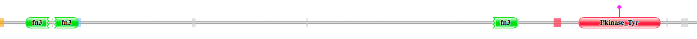

3. Les protéines impliquées dans la fusion :
--> 1ere fusion : entre les gènes EML4 et ALK :
Protéine codée par EML4 :
- Fonction :
La protéine Echinoderm microtubule-associated protein-like 4 peut modifier la dynamique d'assemblage des microtubules, de sorte que les microtubules soit légèrement plus longs, mais plus dynamiques.
Elle permet une Interaction sélective et non-covalente avec des microtubules, filaments composés de monomères de tubuline.
- Séquence :
Cette protéine possède 981 acides aminés.
- (Format FASTA) : http://www.uniprot.org/uniprot/Q9HC35.fasta
- Domaine Pfam de la protéine EML4_HUMAN (Q9HC35) :
Protéine codée par ALK :
- Fonction :
La protéine ALK tyrosine kinase receptor est un Récepteur neuronal tyrosine kinase qui est essentiellement et transitoirement exprimé dans des régions spécifiques des systèmes nerveux central et périphérique et joue un rôle important dans la genèse et la différenciation du système nerveux. Transduit des signaux de ligands à la surface de la cellule, par l'activation spécifique de la voie MAPK (mitogen-activated protein kinase). Phosphoryle presque exclusivement à la première tyrosine du motif Y-x-x-Y-Y. Après activation par le ligand, ALK induit la phosphorylation de la tyrosine de CBL, FRS2, IRS1 et SHC1, ainsi que des MAP kinases MAPK1 / ERK2 et MAPK3 / ERK1. Agit comme un récepteur pour les ligands pléiotrophine (PTN), un facteur de croissance sécrété, et la midkine (MDK), un facteur lié au PTN, participant ainsi à la transduction du signal PTN et MDK. La liaison PTN induit l'activation de la voie MAPK, qui est importante pour la signalisation anti-apoptotique du PTN et la régulation de la prolifération cellulaire. La liaison MDK induit la phosphorylation du substrat récepteur de l'insuline cible ALK (IRS1), active les protéines kinases activées par les mitogènes (MAPK) et la PI3-kinase, ce qui entraîne également une induction de la prolifération cellulaire. Entraîne l'activation de NF-kappa-B, probablement via IRS1 et l'activation de la sérine / thréonine kinase AKT. Le recrutement de IRS1 à l'ALK activé et l'activation de NF-kappa-B sont essentiels pour la croissance autocrine et la signalisation de survie de MDK.
- Séquence :
Cette protéine possède 1620 acides aminés.
- (Format FASTA ): http://www.uniprot.org/uniprot/Q9UM73.fasta
Domaine Pfam de la protéine ALK_HUMAN ( Q9UM73) :
Domaine MAM : en positon 266-426
Domaine MAM : en positon 480-635
Domaine Glycin rich protéin : en position 726-922
Domain protéin tyrosine kinase : en position 1116-1383
-->2eme fusion : entre les gènes CD74 et ROS1
Protéine codée par CD74 :
- Fonction :
La protéine CD74 antigen Joue un rôle critique dans le traitement des antigènes du CMH de classe II en stabilisant les hétérodimères alpha / bêta de classe II sans peptide dans un complexe peu après leur synthèse et en dirigeant le transport du complexe du réticulum endoplasmique vers le système endosomal / lysosomal où le traitement et la liaison de l'antigène des peptides antigéniques au CMH de classe II a lieu. Sert de récepteur de surface cellulaire pour la cytokine MIF.
- Séquence : Cette protéine possède 296 acides aminés.
Protéine codée par ROS1 :
- Fonction :
La protéine Proto-oncogene tyrosine-protein kinase ROS est un Récepteur tyrosine kinase orphelin (RTK) qui joue un rôle dans la différenciation des cellules épithéliales et la régionalisation de l'épithélium épididymaire proximal. Peut activer plusieurs voies de signalisation en aval liées à la différenciation cellulaire, la prolifération, la croissance et la survie, y compris la voie de signalisation PI3 kinase-mTOR. Médiate la phosphorylation de PTPN11, un activateur de cette voie. Peut également phosphoryler et activer le facteur de transcription STAT3 pour contrôler la croissance cellulaire indépendante de l'ancrage. Médiate la phosphorylation et l'activation de VAV3, un facteur d'échange de nucléotide guanine régulant la morphologie cellulaire. Peut activer d'autres protéines de signalisation en aval, y compris AKT1, MAPK1, MAPK3, IRS1 et PLCG2.
- Séquence :
Cette protéine possède 2347 acides aminés.
- (Format Fasta) : http://www.uniprot.org/uniprot/P08922.fasta
